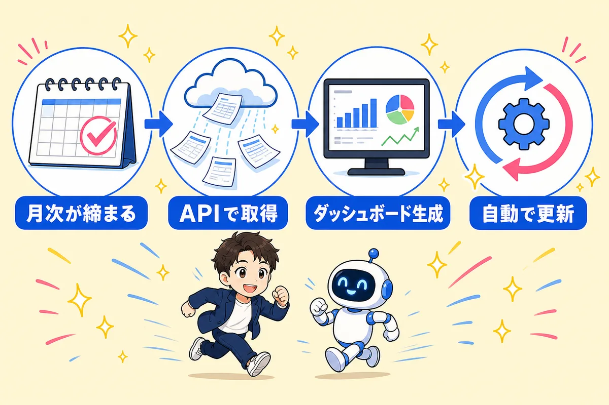
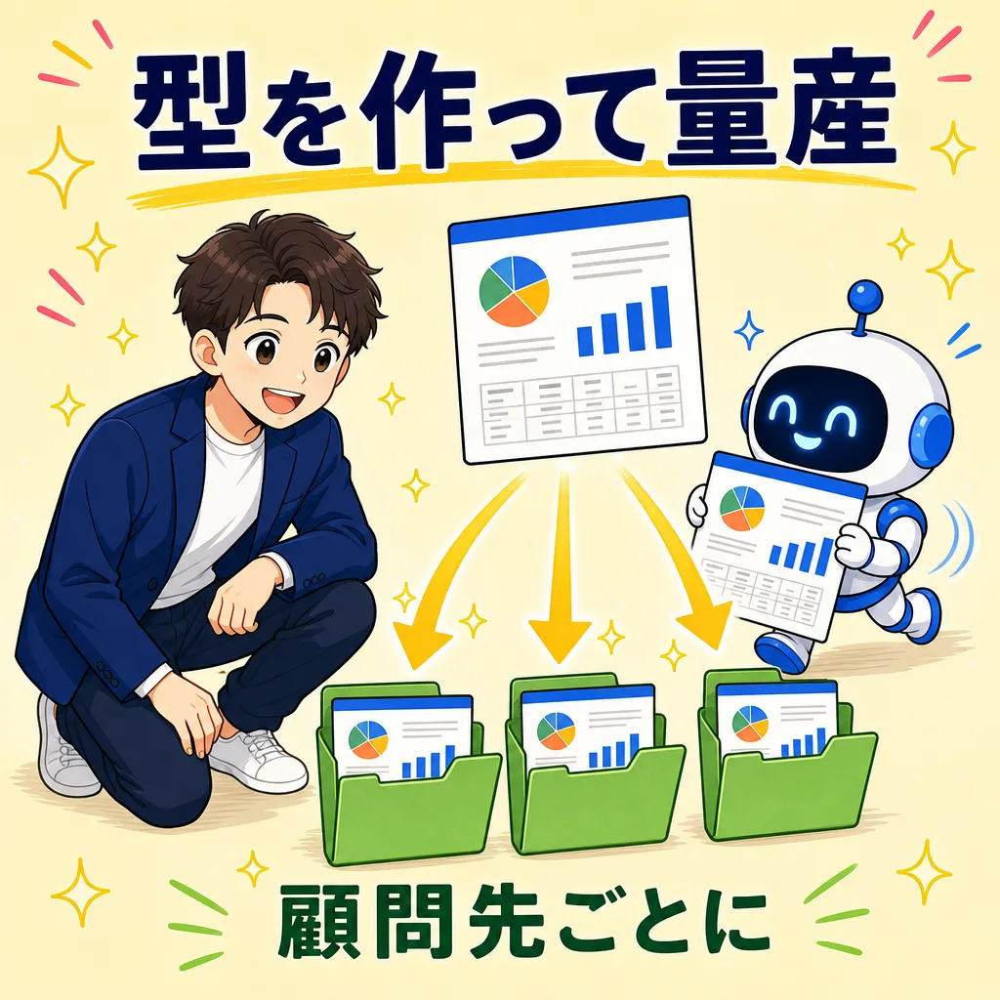

月次が締まったら、
ダッシュボードが自動で届く
起票は自動（第3回）、チェックも自動（第5回）。第7回はその先です。締まった試算表をfreee／MF会計のAPIから取ってきて、顧問先ごとの月次ダッシュボードにする。そして最後は、その更新まで自動にします。
🎯 この課題を終えると…
- freee／MF会計から試算表・月次推移をAPIで取得できます（画面からのコピペ卒業）
- 顧問先に見せられる月次ダッシュボード（HTML1枚）をAIに作らせられます
- フォルダ×スキルの型で、何社でも同じ手順で量産できるようになります
- 「月次ダッシュボード作って」の一言、さらには毎月の自動実行まで到達します
- 最後に確認テスト（AIが先生役・70点以上で合格）を受け、恩送りメモを投稿すると修了です🏅
👉 その前に、🧭 追いつき実力テスト（15〜20分）で今日の出発点を確かめましょう。つまずいていても大丈夫、戻り道を用意しています。

追いつき実力テスト：第6回に追いつけているか 🧭
第6回は、第3回「記帳の自動化」と第5回「仕訳チェック」の理解度チェック課題①②をやる回でした。今日はその内容が身についているかに加えて、「自分の業務で使ってみたか」まで点検します。学んだだけで止まっていても大丈夫。その場合は「今夜15分でできる、はじめの一歩」がフィードバックで出るようになっています。やることは2つだけ。下のコピペ文を貼る → 出てきた「結果票」をDiscordの当日スレッドに貼る。これで完了です。
今日の講義の前に「追いつき実力テスト」をします。あなたは試験官役です。
修正・登録は一切しないで、点検とテストだけしてください。
A. キットの状態（第5回）
いま開いているフォルダに 第5回_帳簿レビュー フォルダはありますか？
あるかないかだけ判定してください。
B. レビューの型（第5回）
.claude/skills/ に自作のレビュースキル（chobo-review など）、
または「マイレビュー観点.md」「レビュー観点表」の類はありますか？
あるかないかだけ判定してください。
C. 会計ソフト接続（第1回・第3回）
freeeまたはMF会計のMCPは、いま接続されていますか？
接続できていれば事業所名を確認したうえで、
画面には「接続OK」とだけ書いてください。
D. ミニ実力テスト（第6回の内容・3問）
次の3テーマから、選択式（A/B/C）の問題を1問ずつ、
合計3問を順番に出して、私の答えを採点してください。
1問目: 勘定科目ルール表の「優先順位」
（例: AWSの明細に「Amazon」のルールを当ててよいか、という考え方）
2問目: NGキーワード（給与・源泉・借入返済など）を
即決せず「要確認」に回す理由
3問目: AIのレビュー指摘の扱い
（一見異常でも、会社の前提次第では正常なものがある、という考え方）
E. 実務への落とし込み（第6回のあとの行動チェック）
次の2つを私に質問して、正直に答えてもらってください。
1問目: 講座の配布データではなく「自分の業務のデータ」
（自事務所や担当先の明細・帳簿）で、記帳やレビューを
1回でも試しましたか？
2問目: ルール表やレビュー観点を、自分の業務に合わせて
1行でも追加・書き換えしましたか？
あわせて、いま開いているフォルダに実践の痕跡
（配布時になかった自分用のルール行・観点メモ・作業フォルダなど）が
あるかも見て、答えと合わせて判定してください。
判定: ◎ 自分のデータで試し、ルールも育てている
○ どちらか片方はやった
△ まだ配布データのまま
最後に、次の形式の「結果票」だけをコードブロックで出してください。
事業所名・取引先名・金額・APIキーの値は絶対に入れないでください。
【追いつき実力テスト 結果票】
A キット(第5回まで): OK ／ 要対応
B レビューの型: あり ／ なし
C 会計ソフト接続: OK(freee／MF) ／ 要対応
D ミニテスト: ◯/3問 正解
E 実務への落とし込み: ◎ ／ ○ ／ △
総合: 🟢 追いつきOK ／ 🟡 あと少し ／ 🔴 今日はキャッチアップ
総合の判定基準：
AとCが両方OKで、Dが2問以上正解=🟢。
要対応が1つ、またはDが1問正解=🟡。それ以外=🔴。
（BとEは総合判定に入れません。今日の内容は進められます）
Eが○または△だった場合は、結果票の下に【はじめの一歩メモ】を
コードブロックで出してください。説教や一般論ではなく、
私の環境（使っている会計ソフト・フォルダの中身）を踏まえた
「今夜15分でできる宿題」を2つまで。
どのファイルを開いて・何を貼って・何ができたら完了かまで、
1つ3行以内で具体的に書いてください。
例:「自事務所の通帳明細を10件だけCSVで出して、仕訳分類させてみる」
「ルール表に、担当先でよく出る取引のルールを3行追加する」
このメモにも事業所名・取引先名・金額は入れないでください。
要対応があれば「どれを・どの順で・何分くらいで直せるか」だけ教えてください。
実際に直すのは、私がOKと言ってからにしてください。
- 貼るのは結果票のコードブロックだけ（ミニテストのやり取りや点検の途中ログは貼らない）。【はじめの一歩メモ】が出た方は、それも一緒に貼ってOKです
- 結果票もメモも事業所名・金額が入らない設計なので、そのまま貼って大丈夫です
- 🟡🔴や「E △」でもそのまま貼ってOK。どこで止まっているかの共有が、次の教材を良くします🌸
🛟 第6回に出られなかった方・課題①②が未提出の方へ（戻り道）
- 第6回に出ていない → 第6回アーカイブ動画で流れがつかめます。理解度チェック課題①②はDiscordの課題スレッドにデータ付きで投稿されているので、後日そのまま腕試しできます
- ミニテスト（D）で落とした → 1問目・2問目は第3回課題ページのルール表の考え方、3問目は第5回課題ページの「AIが網を張り、人が判断する」が該当箇所です。今日の内容には支障ないので、そのまま進んでOKです
- キットが古い・無い（A） → このあとのステップ①で最新化できます。そもそも受け取っていない方は第1回課題ページの🎁セクションへ（約10分）
- MCPがつながっていない（C） → Claude Codeに「MCPの接続状態を確認して、再認証の手順を案内して」と伝えるのがいちばん早いです。詳しい戻り道は第5回の追いつきテストの同じ項目にまとめてあります
- まだ自分の業務で試せていない（E） → 落ち込まなくて大丈夫、ここからが本番です。テストが出してくれた【はじめの一歩メモ】の宿題を今夜1つだけやってみてください。メモが出なかった場合は「私の環境でできる、今夜15分の宿題を2つ提案して」と続けて聞けば出てきます
🧭 結果票から、今日の進み方を決める
| 結果票 | 今日の進み方 |
|---|---|
| 🟢 追いつきOK | そのままステップ①へ。今日の主役はステップ③のダッシュボード作りです |
| 🟡 あと少し | C（接続）がOKならそのまま進めます。接続が要対応なら、直してからステップ②へ。時間が足りなければ試算表CSVを使ってステップ③から参加でもOKです |
| 🔴 今日はキャッチアップ | まず戻り道リンクで環境をそろえるところから。今日はここまでで十分です。第7回は後日このページで再現できます |
| E が ○／△ | 今日はそのまま進んでOK。ただし【はじめの一歩メモ】の宿題を、今夜寝る前に1つだけやってみてください。第7回のダッシュボードも「自分の担当先でやってみる」が一番の近道です |
| 会計ソフトが freee／MF 以外 | CやDが「要対応」でも気にしなくてOK。試算表・月次推移をCSVでエクスポートできれば、ステップ③以降はどの会計ソフトでも同じです |
- テストのコピペ文には「修正・登録は一切しない」の一文が入っています。消さないでください
- APIキー・トークンの値そのものは画面に出させないでください（「入っている／空です」だけで十分です）
- Discordに貼るのは結果票と【はじめの一歩メモ】だけ。ミニテストのやり取りには事業所名が混ざることがあります
配布キットを最新版にする 📦
いつもの習慣です。配布用リポジトリ（haifuyou）から最新の教材を取り込みます。第7回はこのページのコピペ文だけで完結するので、キットが最新でなくても先へ進めますが、更新の取り込みは毎回の頭で済ませておくのがおすすめです。
配布用リポジトリ https://github.com/fromk0326-boop/haifuyou から 最新の教材を取り込んでください。 お願いしたいこと： 1. 取り込みの前に、このフォルダにある私の変更をすべて コミットして保存する 2. 上書きではなくマージで取り込む （私が編集したファイルを勝手に消したり元に戻したりしない） 3. 同じファイルを私と配布側の両方が変更していた場合は、 両方の中身を見せて、どちらを残すか1件ずつ私に確認する 4. 終わったら「新しく増えたファイル」「更新されたファイル」 「私の変更がそのまま残ったファイル」を一覧で教えてください
月次データをAPIで取ってくる 🔌
ダッシュボードの材料は、締まったあとの試算表と月次推移です。画面からコピペするのではなく、APIで取ってファイルに整理し、HTMLで見える形にするところまでを1本のコピペ文でやります。取れた数字をその場でブラウザで確かめられるのが、この型のいいところです。
freee MCPを使います。最初に、いま接続されている事業所名を確認して見せてください。 私が「その事業所でOK」と言ってから、次に進んでください。 OKと言ったら、月次ダッシュボードの材料として、先月分 （私が別の月を指定したらその月）のデータを取得してください。 1. 損益計算書（PL）の試算表：対象月の1ヶ月分 2. 貸借対照表（BS）の試算表：対象月末時点 3. 月次推移：直近12ヶ月の売上高・売上総利益・営業利益 4. 現預金の合計残高（対象月末時点） 5. 対象月の経費を金額の大きい順に並べたトップ10 取得できたら「ダッシュボード素材_YYYYMM.md」というファイルに 見出し付きで整理して保存してください（YYYYMMは対象月）。 あわせて、同じ内容を「ダッシュボード素材_YYYYMM.html」として HTMLでも表現して、私がブラウザで開いて確認できるようにしてください （数字の表が見やすければ、飾りはシンプルで構いません）。 大事なルール： - 数字の取得と整理だけしてください。修正・登録は一切しないでください - 取れない項目があれば「取れませんでした」と正直に書いてください。 推計やそれらしい数字で埋めるのは禁止です
- MF会計の方：1行目を「MF会計（マネーフォワード クラウド会計）のMCPを使います」に変えるだけです
- 会計ソフトにつなげない方：試算表と月次推移をCSVでエクスポートして、「このCSVを読み込んで、ダッシュボード素材_YYYYMM.md に整理して、同じ内容をHTMLでも表現して」と頼めば同じ流れになります（どの会計ソフトでもOK）
- 自分のデータを使えない方：キットの
第5回_帳簿レビュー/のデモ帳簿（株式会社デモテック）を素材にすれば、架空の会社で最後まで体験できます
1社分のダッシュボードを作る 📊
ここが第7回の本丸です。さっきの素材ファイルから、ブラウザで開くだけの月次ダッシュボード（HTML1枚）をAIに作らせます。Excelでもパワポでもなく、HTMLにするのがコツです。AIがいちばん得意な出力形式で、スマホでもきれいに開けます。
ダッシュボード素材_YYYYMM.md をもとに、顧問先向けの月次ダッシュボードを
1枚のHTMLファイルとして作ってください。
ファイル名は「ダッシュボード_会社名_YYYYMM.html」にしてください。
作り方の条件：
- HTMLファイル1枚で完結させる
（外部ライブラリやネット接続なしで、ダブルクリックだけで開けること）
- スマホでもPCでも崩れないレイアウトにする
- 構成は上から順に：
1. タイトル（会社名・対象月）と「社外秘」の表示
2. カード型の指標4つ：売上高・営業利益・現預金残高・売上の前月比
3. 月次推移グラフ：直近12ヶ月の売上高（棒）と営業利益（折れ線）
4. 経費の構成：金額の大きい順トップ5の表
5. 「今月のトピック」：数字から読み取れる事実を3行まで
（例：売上が前月比+12%、広告費が直近12ヶ月で最大）
- グラフはSVGを自分で描いてください（外部の描画ライブラリは使わない）
大事なルール：
- 素材ファイルにある数字だけを使ってください。
無い数字を推計で作らないでください
- 「今月のトピック」は事実の指摘だけ。税務判断や経営アドバイスの
断定は書かないでください
- できあがったら保存先のフルパスを教えてください。
私がブラウザで開いて確認します
- 「グラフの色を事務所のコーポレートカラー（#◯◯◯◯◯◯）にして」
- 「粗利率の推移も折れ線で足して」「役員報酬は経費トップ5から外して」
- 「社長がスマホで見る前提で、カードをもっと大きくして」
- ダッシュボードには会社の数字がそのまま入ります。リポジトリにアップロードしない・掲示板やDiscordに貼らないでください（見せてよいのはその顧問先だけです）
- 顧問先に送る前に、必ず自分の目で数字を確認してください。AIの作った数字をノーチェックで顧問先に出すのは事故のもとです
🛠 迷ったとき・トラブル
- グラフが崩れる・重なる → スクリーンショットを貼って「ここが崩れている」と見せるのが一番早いです。Claude Codeは画像を見て直せます
- 前年同月比が出ない → 素材の月次推移が12ヶ月未満だと計算できません。「前年同月比は無しでOK」と伝えるか、期間を延ばして取り直してください
- 文字化けする → 「HTMLの文字コードをUTF-8で指定して」と伝えれば直ります
- もっとかっこよくしたい → 「参考にしたいデザインのスクリーンショット」を貼って「この雰囲気に寄せて」が効きます
顧問先ごとに量産できる型にする 🗂

1社できれば、あとは同じ手順の繰り返しです。第5回でやったのと同じように、今日の流れをスキル（手順書）にして、「◯◯社の月次ダッシュボード作って」の一言で動く型にします。
月次ダッシュボード作りを、どの顧問先でも同じ手順で回せる「型」にしたいです。
1. 「顧問先ダッシュボード」というフォルダを作り、その中に
顧問先ごとのサブフォルダを置く構成にしてください。
さっき作った1社分（素材mdとHTML）を、その会社のフォルダに移動してください
2. .claude/skills/monthly-dashboard/SKILL.md を新しく作ってください。
手順は今日やった流れそのままです：
(1) 接続中の事業所名を確認して、私のOKを待つ
(2) 対象月のPL・BS・月次推移・現預金・経費トップ10を取得する
(3) 顧問先ダッシュボード/会社名/ダッシュボード素材_YYYYMM.md に保存する
（同じ内容のHTML版もあわせて同じフォルダに保存する）
(4) 同じフォルダに ダッシュボード_会社名_YYYYMM.html を生成する
(5) 保存先を報告して、数字の突き合わせを私に促す
※成果物はすべてHTMLでも見られる状態にする（mdだけで終わらせない）
3. スキルの説明（description）は「月次試算表から顧問先ダッシュボードを
生成する。修正・登録・税務判断はしない」としてください
4. できあがったら SKILL.md の中身を見せてください。私がOKしたら完成です
大事なルール：
- スキルには手順だけを書いてください。
顧問先名・数字・APIキーなどのデータは書かないでください
- 手順(1)の事業所確認は「絶対に省略しない」と明記してください。
違う会社の数字が混ざるのが、この仕組みでいちばん危ない事故です
- freeeの方：「事業所を◯◯に切り替えて、月次ダッシュボード作って」でOK。切り替え後に画面に出る事業所名を必ず確認してから進めてください
- MF会計の方：MCPの認可が1事業所単位なので、別の会社に使うときは接続し直しが必要です（切り替えの手順もClaudeに聞けば案内してくれます）
- ダッシュボードのデザインを直したくなったら、スキルに「グラフの色は#◯◯◯◯◯◯」のようにデザインの決まりごとを書き足していくと、全社の見た目がそろいます
毎月自動で回るようにする 🔄
最後は「毎月、自分で思い出さなくても回る」ところまで持っていきます。自動化には2段階あります。今日のゴールはレベル1。レベル2は余裕のある方向けの発展です。
| やり方 | 向いている人 | |
|---|---|---|
| レベル1 一言で回す | 月次の締めが終わったら「全社分の月次ダッシュボード作って」と一言話しかける。カレンダーに毎月の繰り返し予定「ダッシュボード更新」を入れておく | 全員（今日のゴール）。人が起点になるぶん、締め前に走ってしまう事故がない |
| レベル2 完全自動 | 決まった日にPCが自動で実行する仕組みをClaude Codeに作らせる（下のコピペ文） | 発展・任意。ステップ④までが安定して回るようになってから |
先月分の月次の締めが終わりました。 monthly-dashboard スキルで、顧問先ダッシュボードを更新してください。 会社ごとに、事業所名の確認 → 私のOK → 生成、の順で1社ずつ進めてください。 全部終わったら「どの会社の・何月分を作ったか」の一覧も 1枚のHTML（更新レポート）で表現して見せてください。
🚀 レベル2（発展・任意）：決まった日に自動で走らせる
PCの「決まった時刻にプログラムを動かす仕組み」（Windowsならタスクスケジューラ、Macならlaunchd）を、Claude Codeに設定させます。仕組みの名前は覚えなくて大丈夫です。
月次ダッシュボードの更新を、毎月10日の朝に自動で走らせたいです。 私のPCでできる方法を提案して、私がOKしたら設定してください。 条件： - 自動で動かすのは「データ取得 → ダッシュボード生成」だけ。 会計ソフトへの登録・修正は絶対に含めないでください - いきなり本番設定にせず、まず1回テスト実行して、 できあがったファイルを私に見せてから本番の設定にしてください - 会計ソフトの認証が切れていたら、勝手に再認証しようとせず、 「認証が切れています」というメモを残して止まるようにしてください - 設定が終わったら「何が・いつ・どう動くか」と 「止めたいときはどうするか」を一覧で説明してください
- 完全自動は「読み取り＋ファイル生成」だけに絞るのが鉄則です。登録・修正・送信を無人で動かしてはいけません
- 自動生成されたダッシュボードも、顧問先に見せる前の数字確認は人の仕事のままです
- ちなみに畠山事務所では、この仕組みの本番版が毎晩自動で走っていて、顧問先60社分の月次データが朝には手元にそろっています。今日作った型は、その入り口です
確認テストを受ける（合格すると恩送りメモが出ます）
ステップ①〜⑤が終わったら、Claude Code に先生役をお願いして、今日の理解チェックを受けてください。70点以上で合格（何回でも再挑戦OK）。合格すると、Claudeが今日の体験を1問ずつインタビューしてくれて、その答えがそのまま「恩送りメモ」になります。
第7回の課題（月次データのAPI取得／ダッシュボードのHTML生成／
数字の突き合わせ確認／顧問先ごとのフォルダとスキル化／毎月の自動化）の
理解チェックをお願いします。合格するまで、恩送りメモは出さないでください。
【テストの進め方】
1. この課題の内容から、選択式（A/B/C）のクイズを2問 → 自由記述
（自分の言葉で説明する問題）を1問、1問ずつ順番に出して。
「自動で動かしてよい範囲（読み取り・生成まで）と、
人が必ずやること（数字の確認・見せる判断）の線引き」に関する問題を
必ず1問入れて。
2. 全部答え終わったら100点満点で採点して、点数と理由を短く伝えて。
3. 70点以上で合格 → インタビューへ。70点未満なら、間違えた所をやさしく
解説してから、別の問題でもう一度出して（何回でもOK・責めないで）。
4. 選択肢に「お任せ」は付けないで（自分で考えて答えるテストのため）。
【合格したら：インタビュー】
恩送りメモの中身は、あなた（AI）が想像で書かないでください。
私の体験を聞き出して、私が話した言葉だけで作ります。
次の5問を、1問ずつ・自由入力で聞いてください
（選択式にしない・まとめて聞かない）。
Q1. 今日いちばん時間がかかった／詰まったのはどこ？
そのとき画面には何と出ていた？
（エラー文・ボタン名・画面の名前は、思い出せる範囲でそのまま）
Q2. それはどうやって抜けた？（自分でやったこと、Claudeに何と頼んだか）
Q3. できあがったダッシュボードを見て「へえ」と思ったことは？
（数字の発見でも、見せ方の発見でもOK。顧問先名・取引先名・
具体的な金額は言わずに、「◯◯が思ったより大きかった」のように
抽象化して答えます）
Q4. あなたのダッシュボードに足した（足したい）指標や工夫は何？
なぜそれを足そうと思った？
Q5. この課題ページで分かりづらかった所・直してほしい所はありましたか？
（1行でもOK・思いつかなければ『特になし』でOK）
インタビューのルール：
- 答えが短くても責めないで。ただし一言だけの答えには、1回だけ
「たとえばどんな場面？」と具体化を促して。それでも出てこなければ、
そのまま次へ進んで。
- 「思い出せない」「特にない」と言われたら、思い出す手がかりとして、
この課題で実際に起きがちな場面を3つほど挙げて「近いものはある？」と
聞いてOK。ただし当てはまらなければ「なし」のまま進めて。
私が言っていないことを、あなたが代わりに書かないで。
- 私の答えを、立派な文章に書き換えないで。言い回しは私のまま、
誤字と重複だけ直す程度にして。
【恩送りメモの出力】
インタビューが終わったら、「恩送りメモ」という見出しで、チャットから
そのままコピペできる1つのコードブロックとして出力して。
・1行目は必ず「確認テスト：◯点（◯回目で合格）」にする
・続けて、私がQ1〜Q4で話した内容を、話した順に体験談としてまとめる
・最後に、Q5の答えを「💬 課題ページへの改善案：」の行として原文のまま
入れる（『特になし』なら省略OK）
・長さは私が話した分だけでいい。8行に届かなくてもOK。足りないからといって、
私が言っていない体験・感想・エラー文を足さないで。盛るくらいなら短い方がいい
・私が挙げたエラー文・ボタン名・画面の名前は、要約で削らずそのまま残して
※ 顧問先名・取引先名・具体的な金額・事業所名・個人情報・APIキーなどの
秘密情報は、メモに絶対に入れないで（「◯◯な明細で」のように抽象化して）。
最後に「このメモをコピーして、課題ページの『恩送りメモを投稿して修了』に
貼れば修了です🎉」と締めて。
恩送りメモを投稿して修了 🏅
確認テストの最後にClaudeが出してくれた「恩送りメモ」を、そのまま下に貼って投稿してください。投稿すると修了バッジが解放されます🎉 第7回のメモにはあなたがダッシュボードに足した指標・工夫が入っています。それが集まって、みんなのダッシュボードの型が育ちます。
❓ よくあるつまずき
できたダッシュボードは、そのまま顧問先に送っていい？
グラフの数字が試算表と合わない
freee／MF以外の会計ソフトでもできる？
顧問先が増えてきたら、事業所の切り替えはどうする？
毎月何日に走らせるのがいい？
途中で「使用上限に達しました」と表示された
🏅 修了バッジ：月次を届ける人
5つのチェック＋恩送りメモの投稿がそろうと、ここで修了バッジが解放されます。
↑ 上に戻って進める